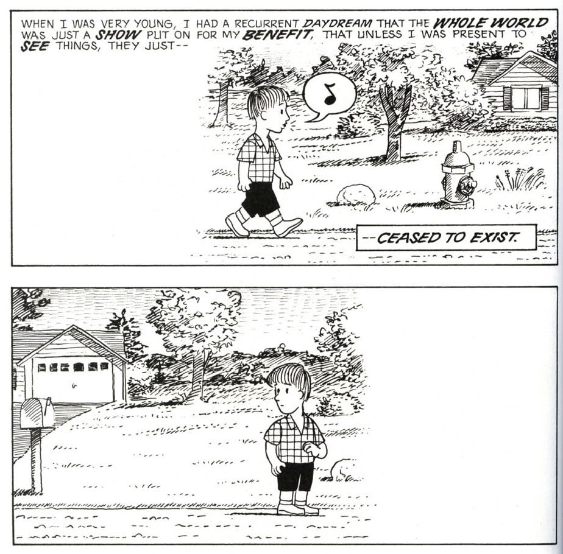

Week 1-2: Stop Motion Animation "Love Cut" & Reading Response
Stop Motion Animation
For this week's project, we went through a lot of ideas and stories, and had a 3 mintue long story, which is already a simplified version of the actual story and we think that it will lose its meaning if we simplify it even more, so we instead, inspired by the materials we got: some colorful wools--maybe some hair story?As we started making the characters, we build up the plot for them. I'm very into photography and always wanted to try doing some cinematography for a short story. Inspired by Toy Story 4 I feel like not only how the entire enviornment for the character feels real or not, but using similar cinematography that's used for actual movie/videos will also help building the characters more. Through this project, I feel strongly that this is sort of where my passion is and also my focus point when watching a anime film (other than the plot).
Also, we do not want to give to much identity to the characters, so we kept them without speaking any lines by only making some emotional sounds, just like Minions.

Even though I feel anxious when I was doing the project, but mostly enjoying it alot. The most struggling part for this project will be using Dragonframe is still kind of unfamiliar for us. We only realized (or remembered) that the 'zoom in' only works as a preview but not a crop until we export the video...
Understanding Comics: The Invisible Art
This is a very interesting but at the same time a difficult comic book to me. The words are simple but the it makes me read twice in order to understand concepts. Scott Mccloud starting from definding what exactly is comic as an art form, a medium of expression an idea, the 'closure' (design kid happy to see the old friend mentioned here) happened in the gutters, the time and space and etc... We might see similar concepts in other form of arts but all of them can only happen in comics. I'm a comic person, specially I read a lot of mangas. Though, like he mentioned early in the book, there are still a lot of people think it is a "cheap, disposable, kiddie fare". But like books and movies, there are already a lot of people inspired by comics, or experienced some sort of life that they never get to experienced. There are even educational Mangas with proffessional terminology that introduced some occupation, which is not as popular, and increased the interest of public towards that occupation. This I think also proved Mcclound's point on the readers tend to put themselves in the characters.Below are some parts that I feel really interesting and could be used for other fields

